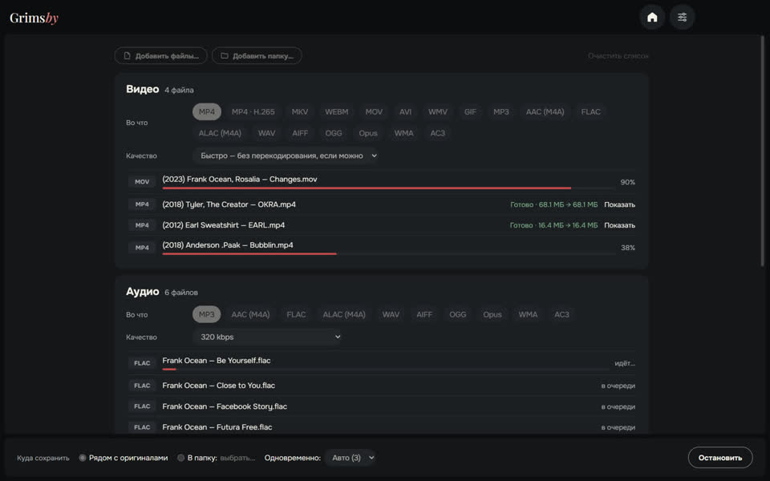
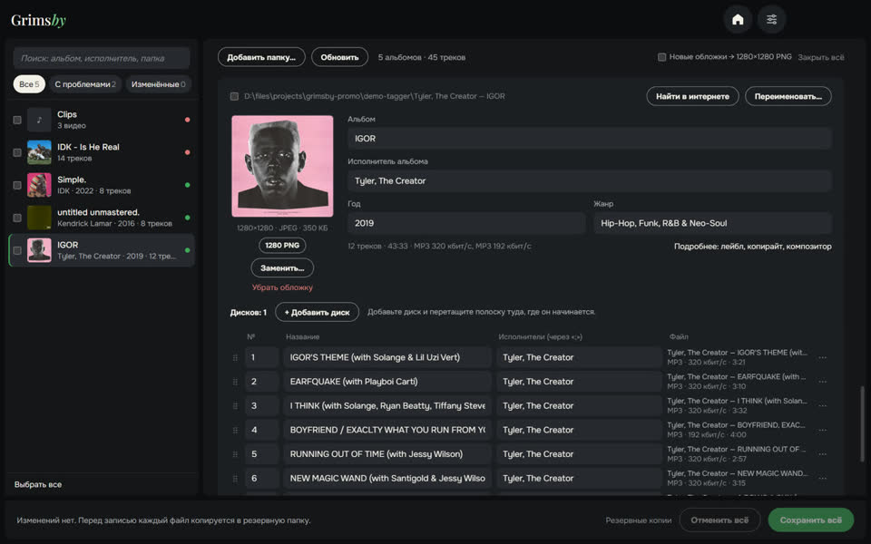

Три бесплатные офлайн-программы в одном стиле — для тех, кто собирает свою медиатеку.
Grimsby Player
Офлайн-плеер для скачанной музыки и клипов
Плеер для тех, кто скачивает и собирает музыку. Укажите папку с музыкой — и коллекция превратится в медиатеку, как в стриминге: альбомы по годам, страницы исполнителей, клипы рядом с альбомами. Всё остаётся на вашем компьютере — без аккаунтов, подписок и рекламы.
- Альбомы по годам выхода и страницы исполнителей: альбомы, клипы, концерты, фиты
- Клипы, концерты и фильмы сами привязываются к альбомам
- Бесшовные переходы, выравнивание громкости и 10-полосный эквалайзер
- Умные плейлисты-радио, которые собираются сами
- Статистика прослушиваний и коллекции, статистика альбома и итоги года
- Встроенные конвертер, поиск дубликатов и «здоровье» медиатеки
Grimsby Converter
Видео, аудио, фото и документы — конвертация без интернета
Конвертер файлов, который работает прямо на вашем компьютере. Перетащите файлы и целые папки вперемешку — они разложатся по группам, у каждой свой формат и качество, и всё конвертируется одной кнопкой. Ничего никуда не загружается.
- Видео, аудио, фото, документы, таблицы и презентации в одном окне
- Целые папки за раз — файлы сами раскладываются по группам
- Режим «Быстро»: MOV в MP4 за секунды без потери качества
- Десятки форматов: от DSD и аудиокниг M4B до PSD из Photoshop и Keynote
- Оригиналы не трогаются; ни ограничений по размеру, ни водяных знаков
- Несколько файлов одновременно — сколько потянет процессор

Grimsby Tagger
Пакетный редактор тегов: альбомы, обложки, имена файлов
Редактор тегов для музыкальной медиатеки, который работает альбомами, а не по одному файлу. Укажите папку — он разложит файлы по альбомам, покажет каждый карточкой с обложкой и подсветит, что не так. Исправьте всё и сохраните одной кнопкой.
- Альбомы собираются сами: диски, издания, файлы без тегов
- Проблемы на виду: пустые поля, разнобой, нет обложки, кракозябры
- Исправления в один клик — из имён файлов и папок
- Поиск альбома в интернете и сопоставление треков с вашими файлами
- Переименование файлов и папок по шаблону, с отменой
- И видео: MP4, MKV, MOV и другие — теги и обложки, без перекодирования
